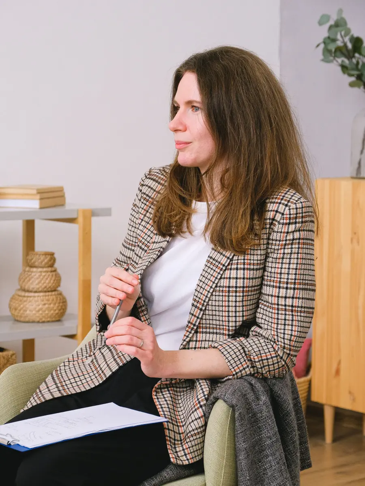
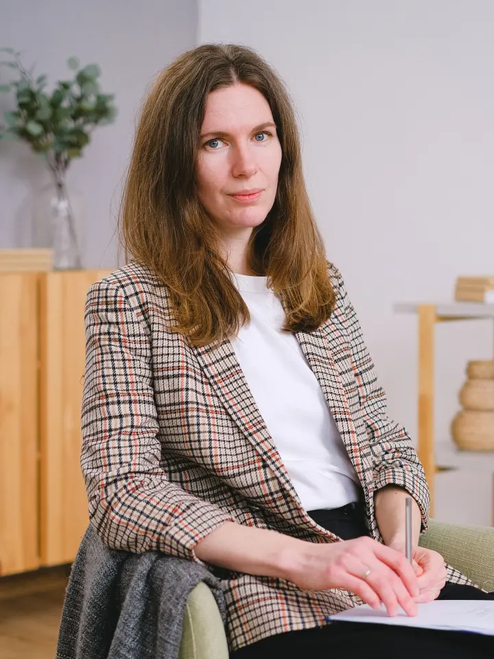

Psicóloga para la ansiedad, los ataques de pánico y el estrés
Te acompaño con herramientas concretas para que puedas entender lo que te pasa y sentirte mejor en tu día a día. Atiendo presencial en Palermo y online, estés donde estés.
Pedir una primera entrevista por WhatsApp
Con qué trabajo
Con qué te puedo ayudar
Trabajo con adultos que sienten que algo los está desbordando.
-
Ansiedad
Preocupación que no se apaga, tensión en el cuerpo, la cabeza que no para. Vamos a ver de dónde viene y cómo manejarla.
-
Ataques de pánico
Si alguna vez sentiste que te faltaba el aire o que te pasaba algo grave, sé lo que asusta. Se pueden entender y se pueden manejar.
-
Estrés
Cuando las exigencias superan lo que podés sostener y aparecen el cansancio, la irritabilidad o los problemas para dormir.
-
Burnout
El agotamiento que viene del trabajo: no tener energía, sentir que nada alcanza, no poder desconectar.
No atiendo niños ni parejas. Si es lo que buscás, escribime igual y te recomiendo a un colega.
Cómo trabajo
Cómo trabajo
Terapia cognitivo-conductual
Trabajo desde la terapia cognitivo-conductual. Es un enfoque práctico: además de hablar de lo que te pasa, vamos a ver cómo se relacionan lo que pensás, lo que sentís y lo que hacés, y a trabajar con herramientas concretas que podés usar en tu vida cotidiana. Tiene objetivos claros y suele durar menos de lo que la gente imagina.
La primera entrevista
En la primera entrevista nos conocemos. Me contás qué te trae a consulta, con tus palabras y a tu ritmo. No hace falta que tengas nada preparado ni que sepas por dónde empezar: para eso estoy yo. Al final vemos juntos si este es el espacio indicado para lo que necesitás.
Modalidades
-
Presencial
En mi consultorio de Palermo, CABA, los martes y jueves. La dirección exacta te la paso al confirmar el turno.
-
Online
Por videollamada (Google Meet), desde cualquier lugar del país o del mundo.

Sobre mí
Sobre mí
Soy Mariana Ferreyra, psicóloga. Me recibí en la Universidad de Buenos Aires y me especialicé en terapia cognitivo-conductual con un posgrado en la Fundación Aiglé.
Hace ocho años que trabajo en clínica: primero en una institución y, desde hace tres, en mi consultorio. Acompaño a adultos que atraviesan momentos de ansiedad, estrés o agotamiento, muchas veces vinculados con el trabajo.
Elegí la terapia cognitivo-conductual porque me gusta que cada persona se vaya de la sesión con algo concreto para usar en su semana. Creo en una terapia clara, donde sepas en qué estamos trabajando y para qué.
- Licenciada en Psicología, Universidad de Buenos Aires.
- Posgrado en terapia cognitivo-conductual, Fundación Aiglé.
- Matrícula Nacional 00000.
Preguntas frecuentes
Preguntas frecuentes
¿Atendés por obra social o prepaga?
No atiendo por obra social ni prepaga, pero te doy factura por cada sesión para que pidas el reintegro, si tu plan lo cubre. Te recomiendo consultar antes con tu prepaga cuánto te reintegran.
¿Cuánto sale la sesión?
Escribime por WhatsApp y te paso los honorarios actualizados.
¿Cuánto dura el tratamiento?
Depende de cada persona y de lo que la trae a consulta. La terapia cognitivo-conductual trabaja con objetivos concretos y suele ser más breve de lo que la gente imagina. Como referencia, muchos tratamientos por ansiedad o ataques de pánico duran algunos meses. En la primera entrevista lo podemos charlar.
¿Cuánto dura cada sesión y con qué frecuencia?
Cada sesión dura 50 minutos. Al principio nos vemos una vez por semana; más adelante, si el proceso lo permite, podemos espaciar los encuentros.
¿La terapia online funciona igual que la presencial?
Sí. Trabajamos de la misma manera y con las mismas herramientas. Solo necesitás un lugar tranquilo donde puedas hablar con privacidad y una buena conexión. Muchas personas la eligen porque les ahorra traslados y les permite sostener el tratamiento aunque viajen o se muden.
¿Cómo es la primera sesión? No sé qué contar.
Es muy común sentir eso, y está bien. No hace falta que traigas nada preparado. En la primera entrevista te voy a hacer algunas preguntas para conocerte y entender qué te pasa. Vas a contar lo que quieras, a tu ritmo.
Vivo fuera de Argentina, ¿puedo hacer terapia con vos?
Sí. Atiendo online a argentinos y argentinas que viven en otros países. Coordinamos un horario que te quede cómodo según tu huso horario. Los medios de pago desde el exterior te los paso por WhatsApp.
¿Atendés niños o parejas?
No, trabajo solo con adultos en terapia individual. Si es lo que buscás, escribime y te recomiendo a un colega.
Contacto
¿Querés empezar?
Escribime por WhatsApp y coordinamos una primera entrevista. Te respondo dentro del mismo día hábil.
Escribime por WhatsAppPresencial: Palermo, CABA · Online: desde cualquier lugar